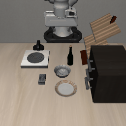

能否完成操作？
输入任务语音，检查模型生成的动作是否达成环境目标。
将语音理解与动作生成连接起来，需要同时验证操作能力、对指令的依赖，以及适配任务之外的迁移。这个项目通过真实仿真闭环与受控对照，逐层检查这三个问题。
输入任务语音，检查模型生成的动作是否达成环境目标。
固定模型和初始状态，比较正常、静音、错配和倒放输入。
分开报告两个联合适配任务与其余八个任务的表现。
来自联合模型自主执行的两段成功记录。
点击任务切换回放，查看最终状态与评测证据。

✓ TASK SUCCESS机器人根据开局语音指令，通过摄像头观察柜子，生成动作并拉开中间抽屉。
“Open the middle drawer of the cabinet.”原输入模态：音频 · 此处展示指令文字
稀疏关键帧回放，每动作块一帧；播放速度不代表模型实际推理速度。尚未获得与本轨迹可核对的原始音频附件，因此这里只展示指令文字。
案例采集于 2026-11-03，来自 expanded300 的早期闭环测试，不是 v2 评测中新录制的案例。成功展示不等同于整体任务成功率。2026-11-07 已从 GPU3 重读报告并校验 GIF 文件哈希。
语音经过编码与语义处理，通过跨专家注意力供动作专家读取。摄像头画面提供环境反馈，生成的动作再交给模拟器执行。
任务音频 → 音频编码器
→ FlexiSLM 官方合帧模块
语音专家处理音频表示
通过跨专家注意力传递信息
结合语音表示与摄像头画面
生成机器人动作序列
执行动作、更新场景
反馈图像并判定任务成功
当前联合路线不生成中间 ASR 转写文本。动作专家读取的是 FlexiSLM 处理后的内部表示；展示任务使用开局指令，执行过程中持续接收视觉反馈。
训练从 pilot100 检查点继续至第 300 步。冻结基座主体，通过 LoRA、跨专家连接及音频合帧相关参数进行适配。音频按不超过 1 秒的块编码，当前策略在操作开始前读取完整初始指令；这不等同于执行中持续监听。视觉输入包含外部与腕部摄像头。
学习率 5×10⁻⁵，梯度累积 2。窗口数量不等于独立任务或独立录音数量。配置依据 GPU3 上的训练 manifest，核查日期 2026-11-07。
LIBERO-GOAL 10 个任务 × 50 个官方初始状态 × 3 条主路线，加上 400 次音频对照。共 1,900 次首次尝试，1,896 次正常完成、4 次技术超时，未执行数为 0。
正确任务文字 → 原始 UniVLA
检验准确指令下的操作能力。
语音 → Whisper-large-v3 → 原始 UniVLA
检验通过文字中转的语音控制。
语音 → FlexiSLM → 联合适配的动作专家
检验内部语音表示驱动操作的能力。
联合模型在 task0 与 task3 上成功 79/100，在其余八项任务上仅成功 10/400。整体 17.8% 低于 ASR 路线的 87.2%。这些结果描述当前检查点和训练设置，不能单独归因于音频与文字的表示差异。
与上方任务范围同步；每项任务预选 10 个状态，固定模型进行对照。
matched 是原始指令补齐到与错配录音相同的长度；silence 为等长静音，mismatched 使用另一任务的语音，reversed 为倒放对照。正常语音相对对照的优势支持音频条件具有作用，尚不足以证明可迁移的语义理解。
| 任务 | 联合适配 | A 正确文本 | B ASR | C 联合模型 |
|---|
来源：GPU3 的 v2 首次尝试汇总、案例报告与训练清单，2026-11-07 只读核查。下载数据包含原始汇总文件 SHA-256 与计划哈希，省略服务器认证信息和内部绝对路径。
FlexiSLM 语音表示已能参与机器人动作生成，在适配任务上产生成功闭环案例。扩量评测揭示了明显的任务迁移限制，为语音—动作对齐与原有动作能力保留提供了诊断依据。
模型自主预测动作，由模拟器判定任务成功。音频对照表明行为受输入条件影响；这一步不要求超过 ASR 基线。
当前整体成功率低于文本路线。录音识别、视觉习惯与语义理解仍需进一步区分，也尚未证明利用了文字之外的声学信息。
尚未验证执行中问答、语音纠正、打断及全双工。仿真控制频率与 GIF 播放速度均不能代替端到端延迟测量。
先定位迁移失败，再验证语音语义与声学信息的贡献，最后扩展持续交互。以下是由当前证据提出的实验方向，而非已实现的能力。
在接口一致性核查后，让适配后的动作专家接收正确文本并关闭跨专家连接，对照原始 UniVLA；再分离动作侧 LoRA 与连接的影响。
task6 的 A/B 成绩为 43/50 与 21/50。固定场景，分别控制大小写、标点、提示模板和实际输入 token，检查语义等价文本的稳定性。
为相同任务加入新说话人和同义改述；在同一场景给出两条均可执行的不同指令，分别用对应目标判定成功。
预先划分训练与保留任务，逐级增加任务、示范及说话人覆盖；比较冻结动作专家与联合适配，并控制训练预算。
设计文字相同、语调或时序不同且正确行为也不同的任务，预先定义规则；比较联合模型、ASR＋VLA 及 ASR＋声学属性模块。
逐步加入“停”“继续”“慢一点”、目标纠正与问答，接入持续音频输入，并与流式 ASR 基线比较。